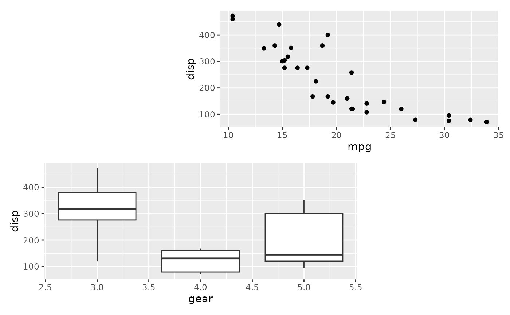
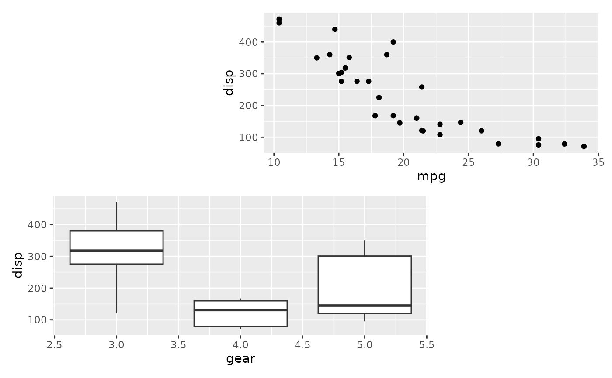

While the use of + is a natural way to add plots together, it can be
difficult to string together multiple plots programmatically if the number
of plots is not known beforehand. wrap_plots makes it easy to take a list
of plots and add them into one composition, along with layout specifications.
Usage
wrap_plots(
...,
ncol = NULL,
nrow = NULL,
byrow = NULL,
widths = NULL,
heights = NULL,
guides = NULL,
tag_level = NULL,
design = NULL,
axes = NULL,
axis_titles = axes
)Arguments
- ...
multiple
ggplots or a list containingggplotobjects- ncol, nrow
The dimensions of the grid to create - if both are
NULLit will use the same logic as facet_wrap() to set the dimensions- byrow
Analogous to
byrowin matrix(). IfFALSEthe plots will be filled in in column-major order- widths, heights
The relative widths and heights of each column and row in the grid. Will get repeated to match the dimensions of the grid. The special value of
NA/-1nullwill behave as1nullunless a fixed aspect plot is inserted in which case it will allow the dimension to expand or contract to match the aspect ratio of the content- guides
A string specifying how guides should be treated in the layout.
'collect'will collect guides below to the given nesting level, removing duplicates.'keep'will stop collection at this level and let guides be placed alongside their plot.autowill allow guides to be collected if a upper level tries, but place them alongside the plot if not. If you modify default guide "position" with theme(legend.position=...) while also collecting guides you must apply that change to the overall patchwork (see example).- tag_level
A string (
'keep'or'new') to indicate how auto-tagging should behave. Seeplot_annotation().- design
Specification of the location of areas in the layout. Can either be specified as a text string or by concatenating calls to
area()together. See the examples for further information on use.- axes
A string specifying how axes should be treated.
'keep'will retain all axes in individual plots.'collect'will remove duplicated axes when placed in the same run of rows or columns of the layout.'collect_x'and'collect_y'will remove duplicated x-axes in the columns or duplicated y-axes in the rows respectively.- axis_titles
A string specifying how axis titltes should be treated.
'keep'will retain all axis titles in individual plots.'collect'will remove duplicated titles in one direction and merge titles in the opposite direction.'collect_x'and'collect_y'control this for x-axis titles and y-axis titles respectively.
Details
If design is specified as a text string and the plots are named (e.g.
wrap_plots(A = p1, ...)) and all plot names are single characters
represented in the design layout string, the plots will be matched to their
respective area by name. Otherwise the areas will be filled out
sequentially in the same manner as using the + operator. See the examples
for more.
Examples
library(ggplot2)
p1 <- ggplot(mtcars) + geom_point(aes(mpg, disp))
p2 <- ggplot(mtcars) + geom_boxplot(aes(gear, disp, group = gear))
p3 <- ggplot(mtcars) + geom_bar(aes(gear)) + facet_wrap(~cyl)
p4 <- ggplot(mtcars) + geom_bar(aes(carb))
p5 <- ggplot(mtcars) + geom_violin(aes(cyl, mpg, group = cyl))
# Either add the plots as single arguments
wrap_plots(p1, p2, p3, p4, p5)
 # Or add them as a list...
plots <- list(p1, p2, p3, p4, p5)
wrap_plots(plots)
# Or add them as a list...
plots <- list(p1, p2, p3, p4, p5)
wrap_plots(plots)
 # Match plots to areas by name
design <- "#BB
AA#"
wrap_plots(B = p1, A = p2, design = design)

# Compare to not using named plot arguments
wrap_plots(p1, p2, design = design)
# Match plots to areas by name
design <- "#BB
AA#"
wrap_plots(B = p1, A = p2, design = design)

# Compare to not using named plot arguments
wrap_plots(p1, p2, design = design)